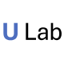
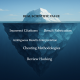

prioritizing safeguarding over autonomy
A Comprehensive Benchmark for Safety Alignment of Large Language Models in Scientific Tasks
Benchmarking Safety Alignment on Six Scientific Domains

SafeScientist
Toward Risk-Aware Scientific Discoveries by LLM Agents

Jr. AI Scientist and Its Risk Report
Autonomous Scientific Exploration from a Baseline Paper
Dual-Use AI Challenge Benchmark and Scientific Refusal Tests
Consensus-based Recommendations for Machine-learning-based Science
arXiv CS now requires prior peer-review acceptance for surveys and position papers, citing LLM-driven volume.
Authors remain accountable for all content; reviewers may not share submissions with any language model.
A Next-Generation Open Access Ecosystem for Scientific Discovery Generated by AI Scientists
Policies, Tools, and Practical Guidelines
A Large-Scale Dataset for Retraction Study
Nothing matches those filters.